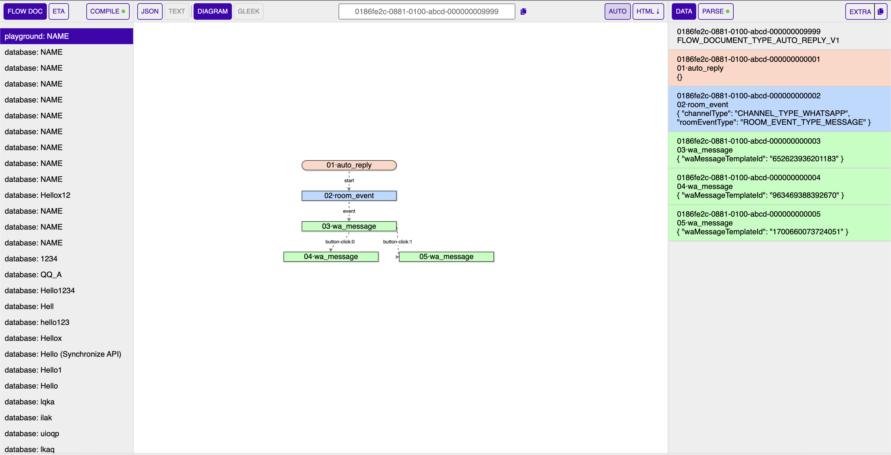
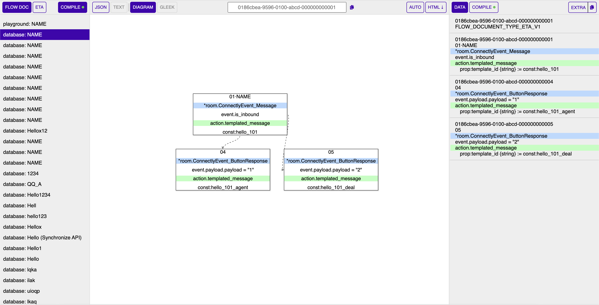
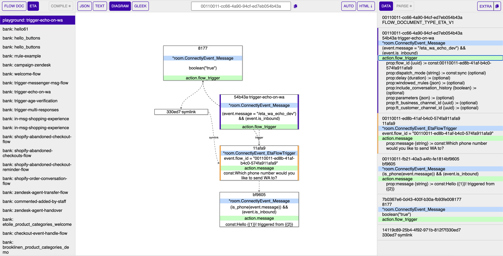

Visualize flow documents and ETA flow descriptors
At my work, I’m working on the flow compiler, which compile from flow documents into ETA flow descriptors.
Flow documents are a collection of nodes and edges, which are JSON objects. They are used to describe the flow of an automation chatbot. The flow compiler takes a flow document and compile it into an ETA flow descriptor, that is used by the ETA engine to run the flow. ETA is short for “Event-Action-Trigger”, a programming paradigm that is used to describe how to react (“action”) with each event matching a specific condition (“trigger”).
In addition to writing the flow compiler, I also created a tool to visualize the flow documents and ETA flow descriptors. The tool is written in Go for backend, svelte and vite for frontend. It uses Svelvet to visualize the diagram and elkjs to layout the diagram.
And say thanks to all the people who contributed to the open source projects that I used in this project.
Screenshots
Demo

A flow document

Compile a flow document to a ETA flow descriptor

An ETA flow descriptor
Author
I'm Oliver Nguyen. A software maker working mostly in Go and JavaScript. I enjoy learning and seeing a better version of myself each day. Occasionally spin off new open source projects. Share knowledge and thoughts during my journey. Connect with me on , , , and .